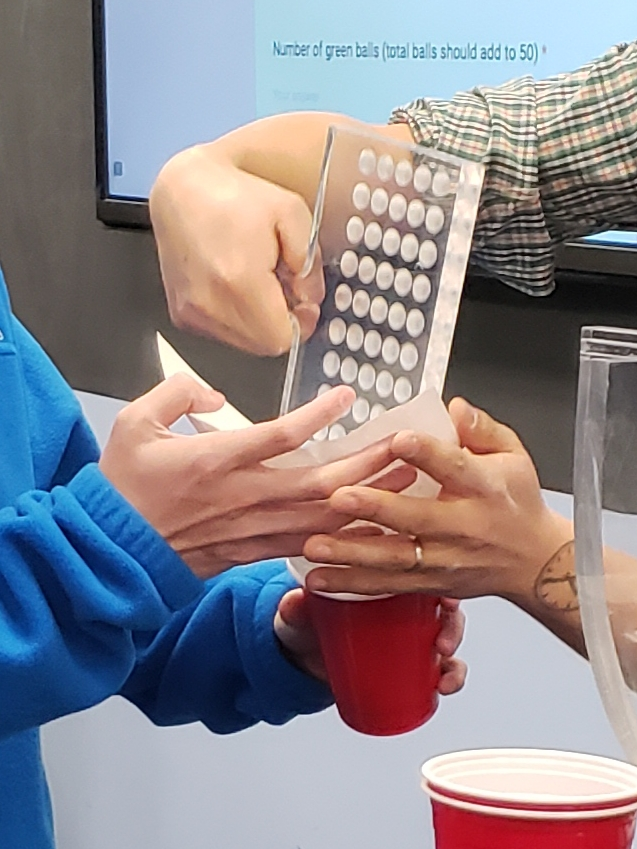
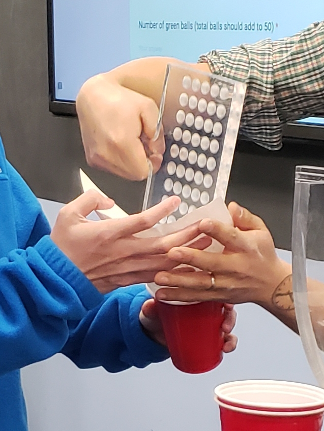

7 Sampling
The third portion of this book introduces statistical inference. This chapter is about sampling. Sampling involves drawing repeated random samples from a population. In Section 7.1 we illustrate sampling by working with samples of white and red balls and the proportion of red balls in these samples. In Section 7.2 we present a theoretical framework and define what is the sampling distribution. We introduce one of the fundamental theoretical results in Statistics: the Central Limit Theorem in Section 7.3. In Section 7.4 we present a second sampling activity, this time working with samples of chocolate-covered almonds and the average weight of these samples. In Section 7.5 we present the sampling distribution in other scenarios. The concepts behind sampling form the basis of inferential methods, in particular confidence intervals and hypothesis tests; methods that are studied in Chapters 8 and 9.
Needed packages
If needed, read Section 1.3 for information on how to install and load R packages.
Recall that loading the tidyverse package loads many packages that we have encountered earlier. For details refer to Section 4.4. The packages moderndive and infer contain functions and data frames that will be used in this chapter.
7.1 First activity: red balls
Take a look at the bowl in Figure 7.1. It has red and white balls of equal size. The balls have been mixed beforehand and there does not seem to be any particular pattern for the location of red and white balls inside the bowl.

FIGURE 7.1: A bowl with red and white balls.
7.1.1 The proportion of red balls in the bowl
We are interested in finding the proportion of red balls in the bowl. To find this proportion, we could count the number of red balls and divide this number by the total number of balls. The bowl seen in Figure 7.1 is represented virtually by the data frame bowl included in the moderndive package. The first ten rows are shown here for illustration purposes:
bowl# A tibble: 2,400 × 2
ball_ID color
<int> <chr>
1 1 white
2 2 white
3 3 white
4 4 red
5 5 white
6 6 white
7 7 red
8 8 white
9 9 red
10 10 white
# ℹ 2,390 more rowsThe bowl has 2400 rows representing the 2400 balls in the bowl shown in Figure 7.1. You can view and scroll through the entire contents of the bowl in RStudio’s data viewer by running View(bowl). The first variable ball_ID is used as an identification variable as discussed in Subsection 1.4.4; none of the balls in the actual bowl are marked with numbers.
The second variable color indicates whether a particular virtual ball is red or white. We compute the proportion of red balls in the bowl using the dplyr data wrangling verbs presented in Chapter 3. A few steps are needed in order to determine this proportion. We present these steps separately to remind you how they work but later introduce all the steps together and simplify some of the code. First, for each of the balls, we identify if it is red or not using a test for equality with the logical operator ==. We do this by using the mutate() function from Section 3.5 that allows us to create a new Boolean variable called is_red.
bowl |>
mutate(is_red = (color == "red"))# A tibble: 2,400 × 3
ball_ID color is_red
<int> <chr> <lgl>
1 1 white FALSE
2 2 white FALSE
3 3 white FALSE
4 4 red TRUE
5 5 white FALSE
6 6 white FALSE
7 7 red TRUE
8 8 white FALSE
9 9 red TRUE
10 10 white FALSE
# ℹ 2,390 more rowsThe variable is_red returns the Boolean (logical) value TRUE for each row where color == "red" and FALSE for every row where color is not equal to "red". Since R treats TRUE like the number 1 and FALSE like the number 0, accounting for TRUEs and FALSEs is equivalent to working with 1’s and 0’s. In particular, adding all the 1’s and 0’s is equivalent to counting how many red balls are in the bowl.
We compute this using the sum() function inside the summarize() function. Recall from Section 3.3 that summarize() takes a data frame with many rows and returns a data frame with a single row containing summary statistics such as the sum():
# A tibble: 1 × 1
num_red
<int>
1 900The sum() has added all the 1’s and 0’s and has effectively counted the number of red balls. There are 900 red balls in the bowl. Since the bowl contains 2400 balls, the proportion of red balls is 900/2400 = 0.375. We could ask R to find the proportion directly by replacing the sum() for the mean() function inside summarize(). The average of 1’s and 0’s is precisely the proportion of red balls in the bowl:
# A tibble: 1 × 1
prop_red
<dbl>
1 0.375This code works well but can be simplified once more. Instead of creating a new Boolean variable is_red before finding the proportion, we could write both steps simultaneously in a single line of code:
# A tibble: 1 × 1
prop_red
<dbl>
1 0.375This type of calculation will be used often in the next subsections.
7.1.2 Manual sampling
In the previous subsection we were able to find the proportion of red balls in the bowl using R only because we had the information of the entire bowl as a data frame. Otherwise, we would have to retrieve this manually. If the bowl contained a large number of balls, this could be a long and tedious process. How long do you think it would take to do this manually if the bowl had tens of thousands of balls? Or millions? Or even more?
In real-life situations, we are often interested in finding the proportion of a very large number of objects, or subjects, and performing an exhaustive count could be tedious, costly, impractical, or even impossible. Because of these limitations, we typically do not perform exhaustive counts. Rather, for this balls example, we randomly select a sample of balls from the bowl, find the proportion of red balls in this sample, and use this proportion to learn more about the proportion of red balls in the entire bowl.
One sample
We start by inserting a shovel into the bowl as seen in Figure 7.2 and collect \(5 \cdot 10 = 50\) balls as shown in Figure 7.3. The set of balls retrieved is called a sample.

FIGURE 7.2: Inserting a shovel into the bowl.

FIGURE 7.3: Taking a sample of 50 balls from the bowl.
Observe that 17 of the balls are red, and thus the proportion of red balls in the sample is 17/50 = 0.34 or 34%. Compare this to the proportion of red balls in the entire bowl, 0.375, that we found in Subsection 7.1.1. The proportion from the sample seems actually pretty good, and it did not take much time or energy to get. But, was this approximate proportion just a lucky outcome? Could we be this lucky the next time we take a sample from the bowl? Next we take more samples from the bowl and calculate the proportions of red balls.
Thirty-three samples
We now take many more random samples as shown in Figure 7.4. Each time we do the following:
- Return the 50 balls used earlier back into the bowl and mix the contents of the bowl to ensure that each new sample is not influenced by the previous sample.
- Take a new sample with the shovel and determine a new proportion of red balls.

 
FIGURE 7.4: Repeating sampling activity.
When we perform this activity many times, we observe that different samples may produce different proportions of red balls. A proportion of red balls from a sample is called a sample proportion. A group of 33 students performed this activity previously and drew a histogram using blocks to represent sample proportions of red balls. Figure 7.5 shows students working on the histogram with two blocks drawn already representing the first two sample proportions found and the third about to be added.

FIGURE 7.5: Students drawing a histogram of sample proportions.
Recall from Section 2.5 that histograms help us visualize the distribution of a numerical variable. In particular, where the center of the values falls and how the values vary. A histogram of the first 10 sample proportions can be seen in Figure 7.6.
FIGURE 7.6: Hand-drawn histogram of 10 sample proportions.
By looking at the histogram, we observe that the lowest proportion of red balls was between 0.20 and 0.25 while the highest was between 0.45 and 0.5. More importantly, the most frequently occurring proportions were between 0.30 and 0.35.
This activity performed by 33 students has the results stored in the tactile_prop_red data frame included in the moderndive package. The first 10 rows are printed below:
tactile_prop_red# A tibble: 33 × 4
group replicate red_balls prop_red
<chr> <int> <int> <dbl>
1 Ilyas, Yohan 1 21 0.42
2 Morgan, Terrance 2 17 0.34
3 Martin, Thomas 3 21 0.42
4 Clark, Frank 4 21 0.42
5 Riddhi, Karina 5 18 0.36
6 Andrew, Tyler 6 19 0.38
7 Julia 7 19 0.38
8 Rachel, Lauren 8 11 0.22
9 Daniel, Caroline 9 15 0.3
10 Josh, Maeve 10 17 0.34
# ℹ 23 more rowsObserve that for each student group the data frame provides their names, the number of red_balls observed in the sample, and the calculated proportion of red balls in the sample, prop_red. We also have a replicate variable enumerating each of the 33 groups. We chose this name because each row can be viewed as one instance of a replicated (in other words “repeated”) activity.
Using again the R data visualization techniques introduced in Chapter 2, we construct the histogram for all 33 sample proportions as shown in Figure 7.7. Recall that each student has a sample of 50 balls using the same procedure and has calculated the proportion of red balls in each sample. The histogram is built using only those sample proportions. We do not need the individual information of each student or the number of red balls found. We constructed the histogram using ggplot() with geom_histogram(). To align the bins in the computerized histogram version so it matches the hand-drawn histogram shown in Figure 7.6, the arguments boundary = 0.4 and binwidth = 0.05 were used. The former indicates that we want a binning scheme, such that, one of the bins’ boundaries is at 0.4; the latter fixes the width of the bin to 0.05 units.
ggplot(tactile_prop_red, aes(x = prop_red)) +
geom_histogram(binwidth = 0.05, boundary = 0.4, color = "white") +
labs(x = "Proportion of red balls in each sample",
title = "Histogram of 33 proportions") FIGURE 7.7: The distribution of sample proportions based on 33 random samples of size 50.
When studying the histogram we can see that some proportions are lower than 25% and others are greater than 45%, but most of the sample proportions are between 30% and 45%.
We can also use this activity to introduce some statistical terminology. The process of taking repeated samples of 50 balls and finding the corresponding sample proportions is called sampling. Since we returned the observed balls to the bowl before getting another sample, we say that we performed sampling with replacement and because we mixed the balls before taking a new sample, the samples were randomly drawn and are called random samples.
As shown in Figure 7.7, different random samples produce different sample proportions. This phenomenon is called sampling variation. Furthermore, the histogram is a graphical representation of the distribution of sample proportions; it describes the sample proportions determined and how often they appear. The distribution of all possible sample proportions that can be found from random samples is called, appropriately, the sampling distribution of the sample proportion. The sampling distribution is central to the ideas we develop in this chapter.
Learning check
(LC7.1) Why is it important to mix the balls in the bowl before we take a new sample?
(LC7.2) Why is it that students did not all have the same sample proportion of red balls?
7.1.3 Virtual sampling
In the previous Subsection 7.1.2, we performed a tactile sampling activity: students took physical samples using a real shovel from a bowl with white and red balls by hand. We now extend the entire process using simulations on a computer, a sort of virtual sampling activity.
The use of simulations permits us to study not only 33 random samples but thousands, tens of thousands, or even more samples. When a large number of random samples is retrieved, we can gain a better understanding of the sampling distribution and the sampling variation of sample proportions. In addition, we are not limited by samples of 50 balls, as we can simulate sampling with any desired sample size. We are going to do all this in this subsection. We start by mimicking our manual activity.
One virtual sample
Recall that the bowl seen in Figure 7.1 is represented by the data frame bowl included in the moderndive package. The virtual analog to the 50-ball shovel seen in Figure 7.2 can be achieved using the rep_slice_sample() function included in the moderndive package. This function allows us to take repeated (or replicated) random samples of size n. We start by taking a single sample of 50 balls:
virtual_shovel <- bowl |>
rep_slice_sample(n = 50)
virtual_shovel# A tibble: 50 × 3
# Groups: replicate [1]
replicate ball_ID color
<int> <int> <chr>
1 1 1970 white
2 1 842 red
3 1 2287 white
4 1 599 white
5 1 108 white
6 1 846 red
7 1 390 red
8 1 344 white
9 1 910 white
10 1 1485 white
# ℹ 40 more rowsObserve that virtual_shovel has 50 rows corresponding to our virtual sample of size 50. The ball_ID variable identifies which of the 2400 balls from bowl are included in our sample of 50 balls while color denotes whether its white or red. The replicate variable is equal to 1 for all 50 rows because we have decided to take only one sample right now. Later on, we take more samples, and replicate will take more values.
We compute the proportion of red balls in our virtual sample. The code we use is similar to the one used for finding the proportion of red balls in the entire bowl in Subsection 7.1.1:
# A tibble: 1 × 2
replicate prop_red
<int> <dbl>
1 1 0.24Based on this random sample, 24% of the virtual_shovel’s 50 balls were red! We proceed finding the sample proportion for more random samples.
Thirty-three virtual samples
In Section 7.1, students got 33 samples and sample proportions. They repeated/replicated the sampling process 33 times. We do this virtually by again using the function rep_slice_sample() and this time adding the reps = 33 argument as we want to retrieve 33 random samples. We save these samples in the data frame virtual_samples, as shown below, and then provide a preview of its first 10 rows. If you want to inspect the entire virtual_samples data frame, use RStudio’s data viewer by running View(virtual_samples).
virtual_samples <- bowl |>
rep_slice_sample(n = 50, reps = 33)
virtual_samples# A tibble: 1,650 × 3
# Groups: replicate [33]
replicate ball_ID color
<int> <int> <chr>
1 1 1970 white
2 1 842 red
3 1 2287 white
4 1 599 white
5 1 108 white
6 1 846 red
7 1 390 red
8 1 344 white
9 1 910 white
10 1 1485 white
# ℹ 1,640 more rowsObserve in the data viewer that the first 50 rows of replicate are equal to 1, the next 50 rows of replicate are equal to 2, and so on. The first 50 rows correspond to the first sample of 50 balls while the next 50 rows correspond to the second sample of 50 balls. This pattern continues for all reps = 33 replicates, and thus virtual_samples has 33 \(\cdot\) 50 = 1650 rows.
Using virtual_samples we find the proportion of red balls for each replicate. We use the same dplyr verbs as before. In particular, we add group_by() of the replicate variable. Recall from Section 3.4 that by assigning the grouping variable “meta-data” before summarize(), we perform the calculations needed for each replicate separately. The other line of code, as explained in the case of one sample, calculates the sample proportion of red balls. A preview of the first 10 rows is presented below:
virtual_prop_red <- virtual_samples |>
group_by(replicate) |>
summarize(prop_red = mean(color == "red"))
virtual_prop_red# A tibble: 33 × 2
replicate prop_red
<int> <dbl>
1 1 0.24
2 2 0.46
3 3 0.38
4 4 0.36
5 5 0.38
6 6 0.3
7 7 0.42
8 8 0.42
9 9 0.32
10 10 0.48
# ℹ 23 more rowsActually, the function rep_slice_sample() already groups the data by replicate, so it is not necessary to include group_by() in the code. Moreover, using dplyr pipes in R we could simplify the work and write everything at once:
- using
rep_slice_sample(), we have 33 replicates (each being a random sample of 50 balls) and
- using
summarize()withmean()on the Boolean values, we determine the proportion of red balls for each sample.
We store these proportions on the data frame virtual_prop_red and print the first 10 sample proportions (for the first 10 samples) as an illustration:
virtual_prop_red <- bowl |>
rep_slice_sample(n = 50, reps = 33) |>
summarize(prop_red = mean(color == "red"))
virtual_prop_red# A tibble: 33 × 2
replicate prop_red
<int> <dbl>
1 1 0.24
2 2 0.46
3 3 0.38
4 4 0.36
5 5 0.38
6 6 0.3
7 7 0.42
8 8 0.42
9 9 0.32
10 10 0.48
# ℹ 23 more rowsAs was the case in the tactile activity, there is sampling variation in the resulting 33 proportions from the virtual samples. As we did manually in Subsection 7.1.3, we construct a histogram with these sample proportions as shown in Figure 7.8. The histogram helps us visualize the sampling distribution of the sample proportion. Observe again the histogram was constructed using ggplot(), geom_histogram(), and including the arguments binwidth = 0.05 and boundary = 0.4.
ggplot(virtual_prop_red, aes(x = prop_red)) +
geom_histogram(binwidth = 0.05, boundary = 0.4, color = "white") +
labs(x = "Sample proportion",
title = "Histogram of 33 sample proportions") FIGURE 7.8: The distribution of 33 proportions based on 33 virtual samples of size 50.
When observing the histogram we can see that some proportions are lower than 25% and others are greater than 45%. Also, the sample proportions observed more frequently are between 35% and 40% (for 11 out of 33 samples). We found similar results when sampling was done by hand in Subsection 7.1.2, and the histogram was presented in Figure 7.7. We present both histograms side by side in Figure 7.9 for an easy comparison. Note that they are somewhat similar in their center and variation, although not identical. The differences are also due to sampling variation.
FIGURE 7.9: The sampling distribution of the sample proportion and sampling variation: showing a histogram for virtual sample proportions (left) and another histogram for tactile sample proportions (right).
Learning check
(LC7.3) Why couldn’t we study the effects of sampling variation when we used the virtual shovel only once? Why did we need to take more than one virtual sample (in our case, 33 virtual samples)?
One thousand virtual samples
It was helpful to observe how sampling variation affects sample proportions in 33 samples. It was also interesting to note that while the 33 virtual samples provide different sample proportions than the 33 physical samples, the overall patterns were fairly similar. Because the samples were taken at random in both cases, any other set of 33 samples, virtual or physical, would provide a different set of sample proportions due to sampling variation, but the overall patterns would still be similar. Still, 33 samples are not enough to fully understand these patterns.
This is why we now study the sampling distribution and the effects of sampling variation with 1000 random samples. Trying to do this manually could be impractical but getting virtual samples can be done quickly and efficiently. Additionally, we have already developed the tools for this. We repeat the steps performed earlier using the rep_slice_sample() function with a sample size set to be 50. This time however, we set the number of replicates reps to 1000, and use summarize() and mean() again on the Boolean values to calculate the sample proportions. We compute virtual_prop_red with the count of red balls and the corresponding sample proportion for all 1000 random samples. The proportions for the first 10 samples are shown below:
virtual_prop_red <- bowl |>
rep_slice_sample(n = 50, reps = 1000) |>
summarize(prop_red = mean(color == "red"))
virtual_prop_red# A tibble: 1,000 × 2
replicate prop_red
<int> <dbl>
1 1 0.24
2 2 0.46
3 3 0.38
4 4 0.36
5 5 0.38
6 6 0.3
7 7 0.42
8 8 0.42
9 9 0.32
10 10 0.48
# ℹ 990 more rowsAs done previously, a histogram for these 1000 sample proportions is given in Figure 7.10.
ggplot(virtual_prop_red, aes(x = prop_red)) +
geom_histogram(binwidth = 0.04, boundary = 0.4, color = "white") +
labs(x = "Sample proportion", title = "Histogram of 1000 sample proportions") FIGURE 7.10: The distribution of 1000 proportions based on 1000 random samples of size 50.
The sample proportions represented by the histogram could be as low as 15% or as high as 60%, but those extreme proportions are rare. The most frequent proportions determined are those between 35% and 40%. Furthermore, the histogram now shows a symmetric and bell-shaped distribution that can be approximated well by a normal distribution. Please read the “Normal distribution” section of (Appendix A online) for a brief discussion of this distribution and its properties.
Learning check
(LC7.4) Why did we not take 1000 samples of 50 balls by hand?
(LC7.5) Looking at Figure 7.10, would you say that sampling 50 balls where 30% of them were red is likely or not? What about sampling 50 balls where 10% of them were red?
Different sample sizes
Another advantage of using simulations is that we can also study how the sampling distribution of the sample proportion changes if we find the sample proportions from samples smaller than or larger than 50 balls. We do need to be careful to not mix results though: we build the sampling distribution using sample proportions from samples of the same size, but the size chosen does not have to be 50 balls.
We must first decide the sample size we want to use, and then take samples using that size. As an illustration, we can perform the sampling activity three times, for each activity using a different sample size, think of having three shovels of sizes 25, 50, and 100 as shown in Figure 7.11. Of course, we do this virtually: with each shovel size we gather many random samples, calculate the corresponding sample proportions, and plot those proportions in a histogram. Therefore we create three histograms, each one describing the sampling distribution for sample proportions from samples of size 25, 50, and 100, respectively. As we show later in this subsection, the size of the sample has a direct effect on the sampling distribution and the magnitude of its sampling variation.

FIGURE 7.11: Three shovels to extract three different sample sizes.
We follow the same process performed previously: we generate 1000 samples, find the sample proportions, and use them to draw a histogram. We follow this process three different times, setting the size argument in the code equal to 25, 50, and 100, respectively. We run each of the following code segments individually and then compare the resulting histograms.
# Segment 1: sample size = 25 ------------------------------
# 1.a) Compute sample proportions for 1000 samples, each sample of size 25
virtual_prop_red_25 <- bowl |>
rep_slice_sample(n = 25, reps = 1000) |>
summarize(prop_red = mean(color == "red"))
# 1.b) Plot a histogram to represent the distribution of the sample proportions
ggplot(virtual_prop_red_25, aes(x = prop_red)) +
geom_histogram(binwidth = 0.05, boundary = 0.4, color = "white") +
labs(x = "Proportion of 25 balls that were red", title = "25")
# Segment 2: sample size = 50 ------------------------------
# 2.a) Compute sample proportions for 1000 samples, each sample of size 50
virtual_prop_red_50 <- bowl |>
rep_slice_sample(n = 50, reps = 1000) |>
summarize(prop_red = mean(color == "red"))
# 2.b) Plot a histogram to represent the distribution of the sample proportions
ggplot(virtual_prop_red_50, aes(x = prop_red)) +
geom_histogram(binwidth = 0.05, boundary = 0.4, color = "white") +
labs(x = "Proportion of 50 balls that were red", title = "50")
# Segment 3: sample size = 100 ------------------------------
# 2.a) Compute sample proportions for 1000 samples, each sample of size 100
virtual_prop_red_100 <- bowl |>
rep_slice_sample(n = 100, reps = 1000) |>
summarize(prop_red = mean(color == "red"))
# 3.b) Plot a histogram to represent the distribution of the sample proportions
ggplot(virtual_prop_red_100, aes(x = prop_red)) +
geom_histogram(binwidth = 0.05, boundary = 0.4, color = "white") +
labs(x = "Proportion of 100 balls that were red", title = "100") For easy comparison, we present the three resulting histograms in a single row with matching \(x\) and \(y\) axes in Figure 7.12.
FIGURE 7.12: Histograms of sample proportions for different sample sizes.
Observe that all three histograms are:
- centered around the same middle value, which appears to be a value slightly below 0.4,
- are somewhat bell-shaped, and
- exhibit sampling variation that is different for each sample size. In particular, as the sample size increases from 25 to 50 to 100, the sample proportions do not vary as much and they seem to get closer to the middle value.
These are important characteristic of the sampling distribution of the sample proportion: the first observation relates to the shape of the distribution, the second to the center of the distribution, and the last one to the sampling variation and how it is affected by the sample size. These results are not coincidental or isolated to the example of sample proportions of red balls in a bowl. In the next subsection, a theoretical framework is introduced that helps explain with precise mathematical equations the behavior of sample proportions coming from random samples.
Learning check
(LC7.6) As shown in Figure 7.12 the histograms of sample proportions are somewhat bell-shaped. What can you say about the center of the histograms?
- A. The smaller the sample size the more concentrated the center of the histogram.
- B. The larger the sample size the smaller the center of the histogram.
- C. The center of each histogram seems to be about the same, regardless of the sample size.
(LC7.7) As shown in Figure 7.12 as the sample size increases, the histogram gets narrower. What happens with the sample proportions?
- A. They vary less.
- B. They vary by the same amount.
- C. They vary more.
(LC7.8) Why do we use random sampling when constructing sampling distributions?
- A. To always get the same sample
- B. To minimize bias and make inferences about the population
- C. To make the process easier
- D. To reduce the number of samples needed
(LC7.9) Why is it important to construct a histogram of sample means or proportions in a simulation study?
- A. To visualize the distribution and assess normality or other patterns
- B. To increase the accuracy of the sample means
- C. To ensure all sample means are exactly the same
- D. To remove any outliers from the data
7.2 Sampling framework
In Section 7.1 we gained some intuition about sampling and its characteristics. In this section we introduce some statistical definitions and terminology related to sampling. We conclude by introducing key characteristics that will be formally studied in the rest of the chapter.
7.2.1 Population, sample, and the sampling distribution
A population or study population is a collection of all individuals or observations of interest. In the bowl activities the population is the collection of all the balls in the bowl. A sample is a subset of the population. Sampling is the act of collecting samples from the population. Simple random sampling is sampling where each member of the population has the same chance of being selected, for example, by using a shovel to select balls from a bowl. A random sample is a sample found using simple random sampling. In the bowl activities, physical and virtual, we use simple random sampling to get random samples from the bowl.
A population parameter (or simply a parameter) is a numerical summary (a number) that represents some characteristic of the population. A sample statistic (or simply a statistic) is a numerical summary computed from a sample. In the bowl activities the parameter of interest was the population proportion \(p=\) 0.375. Similarly, previously a sample of 50 balls was taken and 17 were red. A statistic is the sample proportion which in this example was equal to \(\widehat{p}= 0.34\). Observe how we use \(p\) to represent the population proportion (parameter) and \(\widehat{p}\) for the sample proportion (statistic).
The distribution of a list of numbers is the set of the possible values in the list and how often they occur. The sampling distribution of the sample proportion is the distribution of sample proportions from each possible random samples of a given size. To illustrate this concept recall that in Subsection 7.1.3 we drew three histograms shown in Figure 7.12. The histogram on the left, for example, was constructed from taking 1000 random samples of size \(n=25\), then finding the sample proportion for each sample and using these proportions to draw the histogram. This histogram is a good visual approximation of the sampling distribution of the sample proportion.
The sampling distribution can be a difficult concept to grasp right away:
- The sampling distribution of the sample proportion is the distribution of sample proportions; it is constructed using exclusively sample proportions.
- Be careful as people learning this terminology sometimes confuse the term sampling distribution with a sample’s distribution. The latter can be understood as the distribution of the values in a given sample.
- A histogram from a simulation of sample proportions is only a visual approximation of the sampling distribution. It is not the exact distribution. Still, when the simulations produce a large number of sample proportions, the resulting histogram provides a good approximation of the sampling distribution. This was the case in Subsection 7.1.3 and the three histograms shown in Figure 7.12.
The lessons we learned by performing the activities in Section 7.1 contribute to gaining insights about key characteristics of the sampling distribution of the sample proportion, namely:
- The center of the sampling distribution
- The effect of sampling variation on the sampling distribution and the effect of the sample size on this sampling variation
- The shape of the sampling distribution
The first two points relate to measures of central tendency and dispersion, respectively. The last one provides a connection to one of the most important theorems in statistics: the Central Limit Theorem. In the next section, we formally study these characteristics.
Learning check
(LC7.10) In the case of our bowl activity, what is the population parameter? Do we know its value? How can we know its value exactly?
(LC7.11) How did we ensure that the samples collected with the shovel were random?
7.3 The Central Limit Theorem
A fascinating result in statistics is that, when retrieving random samples from any population, the corresponding sample means follow a typical behavior: their histogram is bell-shaped and has very unique features. This is true regardless of the distribution of the population values and forms the basis of what we know as the Central Limit Theorem. Before fully describing it, we introduce a theoretical framework to construct this and other characteristics related to sampling.
7.3.1 Random variables
A simple theoretical framework can help us formalize important properties of the sampling distribution of the sample proportion. To do this we modify the bowl activity slightly. Instead of using a shovel to select all 25 balls at once, we randomly select one ball at a time, 25 times. If the ball is red we call it a success and record a 1 (one); if it is not red we call it a failure and record a 0 (zero). Then, we return the ball to the bowl so the proportion of red balls in the bowl doesn’t change. This process is called a trial or a Bernoulli trial in honor of Jacob Bernoulli, a 17th-century mathematician who is among the first ones to work with these trials. Getting a sample of 25 balls is running 25 trials and getting 25 numbers, ones or zeros, representing whether or not we have observed red balls on each trial, respectively. The average of these 25 numbers (zeros or ones) represents precisely the proportion or red balls in a sample of 25 balls.
It is useful to represent a trial as a random variable. We use the uppercase letter \(X\) and the subscript \(1\) as \(X_1\) to denote the random variable for the first trial. After the first trial is completed, so the color of the first ball is observed, the value of \(X_1\) is realized as 1 if the ball is red or 0 if the ball is white. For example, if the first ball is red, we write \(X_1 = 1\). Similarly we use \(X_2\) to represent the second trial. For example, if the second ball is white, \(X_2\) is realized as \(X_2=0\), and so on. \(X_1\), \(X_2\), \(\dots\) are random variables only before the trials have been performed. After the trials, they are just the ones or zeros representing red or white balls, respectively.
Moreover, since our experiment is to perform 25 trials and then find the average of them, this average or mean, before the trials are carried out, can also be expressed as a random variable:
\[\overline X = \frac{X_1+X_2+\dots+X_{25}}{25}.\]
Here \(\overline X\) is the random variable that represents the average, or mean, of these 25 trials. This is why we call \(\overline X\) the sample mean. Again, \(\overline X\) is a random variable before the 25 trials have been performed. After the trials, \(\overline X\) is realized as the average of 25 zeros and ones. For example, if the results of the trials are
\[\{0,0,0,1,0,1,0,1,0,0,1,0,0,1,1,0,0,0,1,1,0,1,0,0,0,1 \},\]
the observed value of \(\overline X\) will be
\[\overline X = \frac{0+0+0+1+0+1+\dots+1+0+0+0+1}{25} = \frac{10}{25}=0.4.\]
So, for this particular example, the sample mean is \(\overline X = 0.4\) which happens to be the sample proportion of red balls in this sample of 25 balls. In the context of Bernoulli trials, because we are finding averages of zeros and ones, these sample means are sample proportions! Connecting with the notation used earlier, observe that after the trials have been completed, \(\overline X = \widehat{p}\).
7.3.2 The sampling distribution using random variables
Suppose that we want to calculate the sample proportion for another random sample of 25 balls. In terms of the random variable \(\overline X\), this is performing 25 trials and finding another 25 values, ones and zeros, for \(X_1\), $X_2, \(\dots\), \(X_{25}\) and finding their average. For example we might get:
\[\{1,0,0,1,0,0,0,1,0,0,1,0,1,0,1,1,0,0,0,1,0,1,0,0,0,0\}\]
Then, the realization of \(\overline X\) will be \(\overline X = 9/25 = 0.36\). This sample proportion was different than the one found earlier, 0.4. The possible values of \(\overline X\) are the possible proportions of red balls for a sample of 25 balls. In other words, the value that \(\overline X\) takes after the trials have been completed is the sample proportion for the observed sample of red and white balls.
Moreover, while any given trial can result in choosing a red ball or not (1 or 0), the chances or getting a red ball are influenced by the proportion of red balls in the bowl. For example, if a bowl has more red balls than white, the chances of getting a red ball on any given trial are higher than getting a white ball. Because 1 is the realization of a trial when a red ball is observed, the sample proportion also would tend to be higher.
Sampling variation produces different sample proportions for different random samples, but they are influenced by the proportion of red and white balls in the bowl. This is why understanding the sampling distribution of the sample proportion is learning which sample proportions are possible and which proportions are more or less likely to be observed. Since the realization of \(\overline X\) is the observed sample proportion, the sampling distribution of the sample proportion is precisely the distribution of \(\overline X\). In the rest of this section, we use both expressions interchangeably. Recall the key characteristics of the sampling distribution of the sample proportion, now given in terms of \(\overline X\):
- The center of the distribution of \(\overline X\)
- The effect of sampling variation on the distribution of \(\overline X\) and the effect of the sample size on sampling variation
- The shape of the distribution of \(\overline X\)
To address these points, we use simulations. Simulations seldom provide the exact structure of the distribution, because an infinite number of samples may be needed for this. A large number of replications often produces a really good approximation of the distribution though and can be used to understand well the distribution’s characteristics. Let’s use the output found in Subsection 7.1.3; namely, the sample proportions for samples of size 25, 50, and 100. If we focus on size 25, think of each sample proportion from samples of size 25 as a possible value of \(\overline X\). We now use these sample proportions to illustrate properties of the distribution of \(\overline X\), the sampling distribution of the sample proportion.
7.3.3 The center of the distribution: the expected value
Since the distribution of \(\overline X\) is composed of all the sample proportions that can be calculated for a given sample size, the center of this distribution can be understood as the average of all these proportions. This is the value we would expect to get, on average, from all these sample proportions. This is why the center value of the sampling distribution is called the expected value of the sample proportion, and we write \(E(\overline X)\). Based on probability theory, the mean of \(\overline X\) happens to be equal to the population proportion of red balls in the bowl. In Subsection 7.1.1 we determined that the population proportion was 900/2400 = 0.375, therefore
\[E(\overline X) = p = 0.375.\]
As an illustration, we noted in Subsection 7.1.3 when looking at the histograms in Figure 7.12 that all three histograms were centered at some value between 0.35 and 0.4 (or between 35% and 40%). As we have established now, they are centered exactly at the expected value of \(\overline X\), which is the population proportion. Figure 7.13 displays these histograms again, but this time adds a vertical red line on each of them at the location of the population proportion value, \(p\) = 0.375.
FIGURE 7.13: Three sampling distributions with population proportion \(p\) marked by vertical line.
The results shown seem to agree with the theory. We can further check, using the simulation results, by finding the average of the 1000 sample proportions. We start with the histogram on the left:
virtual_prop_red_25# A tibble: 1,000 × 3
replicate prop_red n
<int> <dbl> <int>
1 1 0.32 25
2 2 0.24 25
3 3 0.16 25
4 4 0.32 25
5 5 0.44 25
6 6 0.36 25
7 7 0.32 25
8 8 0.36 25
9 9 0.2 25
10 10 0.32 25
# ℹ 990 more rows# A tibble: 1 × 1
E_Xbar_25
<dbl>
1 0.377The variable prop_red in data frame virtual_prop_red_25 contains the sample proportions for each of the 1000 samples taken. The average of these sample proportion is presented as object E_Xbar_25 which represents the estimated expected value of \(\overline X\), by using the average of the 1000 sample proportions. Each of the sample proportions is calculated from random samples of 25 balls from the bowl. This average happens to be precisely the same as the population proportion.
It is worth spending a moment understanding this result. If we take one random sample of a given size, we know that the sample proportion from this sample would be somewhat different than the population proportion due to sampling variation; however, if we take many random samples of the same size, the average of the sample proportions are expected to be about the same as the population proportion.
We present the equivalent results with samples of size 50 and 100:
virtual_prop_red_50 |>
summarize(E_Xbar_50 = mean(prop_red))
virtual_prop_red_100 |>
summarize(E_Xbar_100 = mean(prop_red))# A tibble: 1 × 1
E_Xbar_50
<dbl>
1 0.379# A tibble: 1 × 1
E_Xbar_100
<dbl>
1 0.377Indeed, the results are about the same as the population proportion. Note that the average of 1000 sample proportions for samples of size 50 was actually 0.379 close to 0.375. This happens because the simulations only approximate the sampling distribution and the expected value. When using simulations we do not expect to achieve the exact theoretical results, rather values that are close enough to support our understanding of the theoretical results.
Learning check
(LC7.12) What is the expected value of the sample mean in the context of sampling distributions?
- A. The observed value of the sample mean
- B. The population mean
- C. The median of the sample distribution
- D. The midpoint of the range
7.3.4 Sampling variation: standard deviation and standard error
Another relevant characteristic observed in Figure 7.13 is how the amount of dispersion or sampling variation changes when the sample size changes. While all the histograms have a similar bell-shaped configuration and are centered at the same value, observe that when…
- the sample size is \(n=25\) (left histogram) the observed sample proportions are about as low as 0.1 and as high as 0.65.
- the sample size is \(n=50\) (middle histogram) the observed sample proportions are about as low as 0.15 and as high as 0.55.
- the sample size is \(n=100\) (right histogram) the observed sample proportions are about as low as 0.20 and as high as 0.5.
As the sample size \(n\) increases from 25 to 50 to 100, the variation of the sampling distribution decreases. Thus, the values are clustered more and more tightly around the center of the distribution. In other words, the histogram on the left of Figure 7.13 is more spread out than the one in the middle, which in turn is more spread out than the one on the right.
We know that the center of the distribution is the expected value of \(\overline X\), which is the population proportion. From this, we can quantify this variation by calculating how far the sample proportions are, on average, from the population proportion. A well-known statistical measurement to quantify dispersion is the standard deviation. We discuss how it works before we continue with the sampling variation problem.
The standard deviation
We start with an example and introduce some special notation. As an illustration, given four values \(y_1=3\), \(y_2=-1\), \(y_3=5\), and \(y_4= 9\), their average is given by
\[\bar y = \frac14\sum_{i=1}^4y_i =\frac14 (y_1 + y_2 + y_3 + y_4)= \frac{3-1+5+9}{4}= 2.\]
The capital Greek letter \(\Sigma\) represents the summation of values, and it is useful when a large number of values need to be added. The letter \(i\) underneath \(\Sigma\) is the index of summation. It starts at \(i=1\), so the first value we are adding is \(y_{\bf 1} = 3\). Afterwards \(i=2\), so we add \(y_{\bf 2}=-1\) to our previous result, an so on, as shown in the equation above. The summation symbol can be very useful when adding many numbers or making more complicated operations, such as defining the standard deviation.
To construct the standard deviation of a list of values, we
- first find the deviations of each value from their average,
- then square those deviations,
- then find the average of the squared deviations, and
- take the square root of this average to finish.
In our example, the standard deviation is given by
\[\begin{aligned} SD &= \sqrt{\frac14\sum_{i=1}^4(y_i - \bar y)^2} = \sqrt{\frac{(3-2)^2+(-1-2)^2+(5-2)^2+(9-2)^2}{4}} \\ &= \sqrt{\frac{1+9+9+49}{4}}=\sqrt{17} = 4.12 \end{aligned}\]
We present another example, this time using R. We use again our bowl activity with red and white balls in the bowl. We create a Boolean variable is_red that corresponds to TRUEs or 1s for red balls and FALSEs or 0s for white balls and using these numbers, we compute the proportion (average of 1s and 0s) using the mean() function and the standard deviation using the sd() function2 inside summarize():
# A tibble: 1 × 2
p st_dev
<dbl> <dbl>
1 0.375 0.484So, the proportion of red balls is 0.375 with a standard deviation of 0.484. The intuition behind the standard deviation can be expressed as follows: if you were to select many balls, with replacement, from the bowl, we would expect the proportion of red balls to be about 0.375 give or take 0.484.
In addition, when dealing with proportions, the formula for the standard deviation can be expressed directly in terms of the population proportion, \(p\), using the formula:
\[SD = \sqrt{p(1-p)}.\]
Here is the value of the standard deviation using this alternative formula in R:
p <- 0.375
sqrt(p * (1 - p))[1] 0.484The value is the same as using the general formula. Now that we have gained a better understanding of the standard deviation, we can discuss the standard deviation in the context of sampling variation for the sample proportion.
The standard error
Recall that we want to measure the magnitude of the sampling variation for the distribution of \(\overline X\) (the sampling distribution of the sample proportion) and want to use the standard deviation for this purpose. We have shown earlier that the center of the distribution of \(\overline X\) is the expected value of \(\overline X\). In our case, this is the population proportion \(p = 0.375\). The standard deviation will then indicate how far, on average, each possible sample proportion roughly is from the population proportion. If we were to consider using a sample proportion as an estimate of the population proportion, this deviation could be considered the error in estimation. Because of this particular relationship, the standard deviation of the sampling distribution receives a special name: the standard error. Note that all standard errors are standard deviations but not all standard deviations are standard errors.
We work again with simulations and the bowl of red and white balls. We take 10,000 random samples of size \(n=100\), find the sample proportion for each sample, and calculate the average and standard deviation for these sample proportions. This simulation produces a histogram similar to the one presented on the right in Figure 7.13. To produce this data we again use the rep_slice_sample() function and mean() and sd() function inside summarize() to produce the desired results:
bowl |>
rep_slice_sample(n = 100, replace = TRUE, reps = 10000) |>
summarize(prop_red = mean(color == "red")) |>
summarize(p = mean(prop_red), SE_Xbar = sd(prop_red))# A tibble: 1 × 2
p SE_Xbar
<dbl> <dbl>
1 0.375 0.0479Observe that p is the estimated expected value and SE_Xbar is the estimated standard error based on the simulation of taking sample proportions for random samples of size \(n=100\). Compare this value with the standard deviation for the entire bowl, discovered earlier. It is one tenth the size! This is not a coincidence: the standard error of \(\overline X\) is equal to the standard deviation of the population (the bowl) divided by the square root of the sample size. In the case of sample proportions, the standard error of \(\overline X\) can also be determined using the formula:
\[SE_{\overline X} = \sqrt{\frac{p(1-p)}{n}}\] where \(p\) is the population proportion and \(n\) is the size of our sample. This formula shows that the standard error is inversely proportional to the square root of the sample size: as the sample size increases, the standard error decreases. In our example, the standard error is
\[SE_{\overline X} = \sqrt{\frac{0.375\cdot(1-0.375)}{100}} = 0.0484\]
p <- 0.375
sqrt(p*(1-p)/100)[1] 0.0484This value is nearly identical to the result found on the simulation above. We repeat this exercise, this time finding the estimated standard error of \(\overline X\) from the simulations done earlier. These simulations are stored in data frames virtual_prop_red_25 and virtual_prop_red_50, when the sample sizes used are \(n=25\) and \(n=50\), respectively:
# A tibble: 1 × 1
SE_Xbar_50
<dbl>
1 0.0971# A tibble: 1 × 1
SE_Xbar_100
<dbl>
1 0.0667The standard errors for these examples, based on the proportion of red balls in the bowl and the sample sizes, are given below:
sqrt(p * (1 - p) / 25)[1] 0.0968
sqrt(p * (1 - p) / 50)[1] 0.0685The simulations support the standard errors derived using mathematical formulas. The simulations are used to check that in fact the results achieved agree with the theory. Observe also that the theoretical results are constructed based on the knowledge of the population proportion, \(p\); by contrast, the simulations produce samples based on the population of interest but produce results only based on information found from samples and sample proportions.
The formula for the standard error of the sample proportion given here can actually be derived using facts in probability theory, but its development goes beyond the scope of this book. To learn more about it, please consult more advanced treatments in probability and statistics such as this one.
The sampling distribution of the sample proportion
So far we have shown some of the properties of the sampling distribution for the sampling proportion; namely, the expected value and standard error of \(\overline X\). We now turn our attention to the shape of the sampling distribution.
As mentioned before, histograms (such as those seen earlier) provide a good approximation of the sampling distribution of the sample proportion, the distribution of \(\overline X\). Since we are interested in the shape of the distribution, we redraw again the histograms using sample proportions from random samples of size \(n=25\), \(n=50\), and \(n=100\), but this time we add a smooth curve that appears to connect the top parts of each bar in the histogram. These histograms are presented in Figures 7.14, 7.15, and 7.16. The figures represent density histograms where the area of each bar represents the percentage or proportion of observations for the corresponding bin and the total area of each histogram is 1 (or 100%). The ranges for the \(x-\) and \(y-\)axis on all these plots have been kept constant for appropriate comparisons among them.
FIGURE 7.14: Histogram of the distribution of the sample proportion and the normal curve (n=25).
FIGURE 7.15: Histogram of the distribution of the sample proportion and the normal curve (n=50).
FIGURE 7.16: Histogram of the sampling distribution of the sample proportion and the normal curve (n=100).
The curves in red seem to be a fairly good representation of the top bars of the histograms. However, we have not used the simulated data to draw these curves, these bell-shaped curves were extracted from the normal distribution with mean equal to \(p=0.375\) and standard deviation equal to \(\sqrt{{p(1-p)/n}}\) where \(n\) changes for each histogram. This is a fascinating result due to an application of one of the most important results in Statistics: the Central Limit Theorem (CLT).
The CLT states that when the sample size, \(n\), tends to infinity, the distribution of \(\overline X\) tends to the normal distribution (with the appropriate mean and standard deviation). Moreover, it does not depend on the population distribution; the population can be a bowl with red and white balls or anything else.
The observant reader might have noticed that, in practice, we cannot take samples of size equal to infinity. What makes the CLT even more relevant for practical purposes is that the distribution of \(\overline X\) approximates normality even when the sample size used is fairly small. As you can see in Figure 7.14, even when random samples of size \(n=25\) are used, the distribution of \(\overline X\) already seems to follow a normal distribution.
Observe also that all the curves follow the bell-shaped form of the normal curve but the spread is greater when a smaller sample size has been used and is consistent with the standard error for \(\overline X\) found earlier for each case.
Learning check
(LC7.13) What is the role of the Central Limit Theorem (CLT) in statistical inference?
- A. It provides the formula for calculating the standard deviation of any given sample, allowing for an understanding of the sample’s spread or variability.
- B. It states that the sampling distribution of the sample mean will approach a normal distribution, regardless of the population’s distribution, as the sample size becomes large.
- C. It determines the actual mean of the population directly by calculating it from a randomly selected sample, without needing additional data or assumptions.
- D. It is a principle that applies strictly and exclusively to populations that are normally distributed, ensuring that only in such cases the sample means will follow a normal distribution pattern.
(LC7.14) What does the term “sampling variation” refer to?
- A. Variability in the population data.
- B. Differences in sample statistics due to random sampling.
- C. Changes in the population parameter over time.
- D. Variation caused by errors in data collection.
7.3.5 Summary
Let’s look at what we have learned about the sampling distribution of the sample proportion:
- The mean of all the sample proportions will be exactly the same as the population proportion.
- The standard deviation of the sample proportions, also called the standard error, is inversely proportional to the square root of the sample size: the larger the sample size used to calculate sample proportions, the closer those sample proportions will be from the population proportion, on average.
- As long as the random samples used are large enough, the sampling distribution of the sample proportion, or simply the distribution of \(\overline X\), will approximate the normal distribution. This is true for sample proportions regardless of the structure of the underlying population distribution; that is, regardless of how many red and white balls are in the bowl, or whether you are performing any other experiment that deals with sample proportions.
In case you want to reinforce these ideas a little more, Shuyi Chiou, Casey Dunn, and Pathikrit Bhattacharyya created a 3-minute and 38-second video at https://youtu.be/jvoxEYmQHNM explaining this crucial statistical theorem using the average weight of wild bunny rabbits and the average wingspan of dragons as examples. Figure 7.17 shows a preview of this video.

FIGURE 7.17: Preview of Central Limit Theorem video.
7.4 Second activity: chocolate-covered almonds
We want to extend the results achieve for the sample proportion to a more general case: the sample mean. In this section we show how most of the results for sample proportions extend directly to sample means, but we also highlight important differences when working with the sampling distribution of the sample mean.
As we did with sample proportions, we start by illustrating these results with another activity: sampling from a bowl of chocolate-covered almonds, as seen in Figure 7.18.
FIGURE 7.18: A bowl of chocolate-covered almonds.
For ease of exposition we refer to each chocolate-covered almond simply as an almond. We are now interested in the average weight in grams of all the almonds in the bowl; this is the population average weight or population mean weight.
7.4.1 The population mean weight of almonds in the bowl
The population of interest is given by all the almonds in the bowl. The bowl is represented virtually by the data frame almonds_bowl included in the moderndive package. The first ten rows are shown here for illustration purposes:
almonds_bowl# A tibble: 5,000 × 2
ID weight
<int> <dbl>
1 1 3.8
2 2 4.2
3 3 3.2
4 4 3.1
5 5 4.1
6 6 3.9
7 7 3.4
8 8 4.2
9 9 3.5
10 10 3.4
# ℹ 4,990 more rowsThe first variable ID represents a virtual ID number given to each almond, and the variable weight contains the weight in grams for each almond in the bowl. The population mean weight of almonds, a population parameter, can be calculated in R using again the dplyr data wrangling verbs presented in Chapter 3. Observe, in particular, inside the function summarize() the use of the mean(), sd(), and n() functions for the mean weight, the weight’s standard deviation3, and the number of almonds in the bowl:
# A tibble: 1 × 3
mean_weight sd_weight length
<dbl> <dbl> <int>
1 3.64 0.392 5000We have 5,000 almonds in the bowl, the population mean weight is 3.64 grams, and the weight’s standard deviation is 0.392 grams. We used R to compute the mean and standard deviation, but we could have used the formulas instead. If we call \(x_1\) the first almond in the bowl, \(x_2\) the second, and so on, the mean is given by
\[\mu = \sum_{i=1}^{5000}\frac{x_i}{5000}=3.64.\]
and the standard deviation is given by
\[\sigma = \sum_{i=1}^{5000} \frac{(x_i - \mu)^2}{5000}=0.392.\]
The Greek letters \(\mu\) and \(\sigma\) are used to represent the population mean and population standard deviation (the parameters of interest). In addition, since we know the information of the entire bowl, we can draw the distribution of weights of the entire population (bowl) using a histogram:
ggplot(almonds_bowl, aes(x = weight)) +
geom_histogram(binwidth = 0.1, color = "white")FIGURE 7.19: Distribution of weights for the entire bowl of almonds.
We can see that the weight of almonds ranges from 2.6 to 4.6 grams and the most common weights observed are between 3.6 and 4.0 grams, but the distribution is not symmetric and does not follow any typical pattern.
Now that we have a clear understanding of our population of interest and the parameters of interest, we can continue our exploration of the sampling distribution of the sample mean weights of almonds by constructing samples.
7.4.2 Manual sampling and sample means
If we randomly select one almond from the bowl, we could determine its weight using a scale, as shown in Figure 7.20:

FIGURE 7.20: One almond on a scale.
Let’s now take a random sample of 25 almonds, as shown in Figure 7.21, and determine the sample average weight, or sample mean weight, in grams.

FIGURE 7.21: A random sample of 25 almonds on a scale.
Since the total weight is 88.6 grams, as shown in the Figure 7.21, the sample mean weight will be \(88.6/25 = 3.544\). The moderndive package contains the information of this sample in the almonds_sample data frame. Here, we present the weight of the first 10 almonds in the sample:
almonds_sample <- almonds_bowl |>
rep_slice_sample(n = 25, reps = 1)
almonds_sampleThe almonds_sample data frame in the moderndive package has \(n=\) 25 rows corresponding to each almond in the sample shown in Figure 7.21.
The first variable replicate indicates this is the first and only replicate since it is a single sample. The second variable ID gives an identification to the particular almond. The third column weight gives the corresponding weight for each almond in grams as a numeric variable, also known as a double (dbl).
The distribution of the weights of these 25 are shown in the histogram in Figure 7.22.
ggplot(almonds_sample, aes(x = weight)) +
geom_histogram(binwidth = 0.1, color = "white")FIGURE 7.22: Distribution of weight for a sample of 25 almonds.
The weights of almonds in this sample range from 2.9 to 4.4 grams. There is not an obvious pattern in the distribution of this sample. We now compute the sample mean using our data wrangling tools from Chapter 3.
# A tibble: 1 × 2
replicate sample_mean_weight
<int> <dbl>
1 1 3.67The sample mean weight was not too far from the population mean weight of 3.64 grams. The difference between the statistic (sample mean weight) and the parameter (population mean weight) was due to sampling variation.
7.4.3 Virtual sampling
We now perform sampling virtually. The data frame almonds_bowl has 5000 rows, each representing an almond in the bowl. As we did in Section 7.1.3 we use again the rep_slice_sample() function to retrieve 1000 random samples with a sample size set to be 25, and with the number of replicates reps set to 1000. Be sure to scroll through the contents of virtual_samples in RStudio’s viewer.
virtual_samples_almonds <- almonds_bowl |>
rep_slice_sample(n = 25, reps = 1000)
virtual_samples_almonds# A tibble: 25,000 × 3
# Groups: replicate [1,000]
replicate ID weight
<int> <int> <dbl>
1 1 3467 3.7
2 1 3784 4.2
3 1 4653 4.2
4 1 2216 4.1
5 1 98 3.5
6 1 2286 3.6
7 1 4597 3.6
8 1 2385 4.3
9 1 3959 3.7
10 1 1497 3.9
# ℹ 24,990 more rowsObserve that now virtual_samples_almonds has 1000 \(\cdot\) 25 = 25,000 rows. Using the appropriate data wrangling code, the virtual_mean_weight data frame produces the sample mean almond weight for each random sample, a total of 1000 sample means.
virtual_mean_weight <- virtual_samples_almonds |>
summarize(mean_weight = mean(weight))
virtual_mean_weight# A tibble: 1,000 × 2
replicate mean_weight
<int> <dbl>
1 1 3.79
2 2 3.45
3 3 3.67
4 4 3.5
5 5 3.67
6 6 3.63
7 7 3.62
8 8 3.59
9 9 3.56
10 10 3.78
# ℹ 990 more rowsFigure 7.23 presents the histogram for these sample means:
ggplot(virtual_mean_weight, aes(x = mean_weight)) +
geom_histogram(binwidth = 0.04, boundary = 3.5, color = "white") +
labs(x = "Sample mean", title = "Histogram of 1000 sample means") FIGURE 7.23: The distribution of 1000 means based on 1000 random samples of size 25.
The sample mean weights observed in the histogram appear to go below 3.4 grams and above 3.85 grams, but those extreme sample means are rare. The most frequent sample means found seem to be those above 3.5 or below 3.8 grams. Furthermore, the histogram is almost symmetric and showing that bell-shaped form, although the left tail of the histogram appears to be slightly longer than the right tail. While we are dealing with sample means now, the conclusions are strikingly similar to those presented in Subsection 7.4.2 when discussing the sampling distribution for the sample proportion.
7.4.4 The sampling distribution of the sample mean
As we did in the case of the sample proportion, we are interested in learning key characteristics of the sampling distribution of the sample mean, namely:
- The center of the sampling distribution
- The effect of sampling variation on the sampling distribution and the effect of the sample size on sampling variation
- The shape of the sampling distribution
7.4.5 Random variables
Once again, we use random variable to formalize our understanding of the sample distribution of the sample mean. Instead of using Bernoulli trials as we did in the case of sample proportions, our trials will record the almond weights. We again modify the bowl activity slightly. In lieu of selecting a sample of almonds all at once, we randomly select one almond at a time, we record the weight of the almond and return it to the bowl before selecting another almond, so the configuration of weights and the chances of any of the almonds to be selected is the same every time we choose one. Getting a sample of 25 almonds is performing these trials 25 times to get 25 weights. Then, the average of these 25 numbers is the average weight or mean weight of a sample of 25 almonds. This is what we call a sample mean.
Using random variables, we now let uppercase \(X_1\) to be the random variable that represents the weight of the first almond before it has been selected, \(X_2\) the weight of the second almond, and so on. These are random variables because they can take any possible almond weight value from the bowl. After the first trial is completed, the value of \(X_1\) is realized as the weight in grams of the first almond selected. We can represent this value by the lowercase \(x_1\) as it is no longer a random variable but a number and we can write \(X_1 = x_1\). After the second trial is completed, \(X_2 = x_2\), where lowercase \(x_2\) is the observe almond weight, and so on. Since our experiment is to perform 25 trials and then find the average of them, this average or mean, before the trials are carried out, can also be expressed as a random variable:
\[\overline X = \frac{X_1+X_2+\dots+X_{25}}{25}.\]
Observe that \(\overline X\) is the average, or mean, of these 25 trials. This is again why \(\overline X\) is called the sample mean. Recall that when dealing with proportions, the trials are Bernoulli trials, represented only with zeros or ones. In this context, sample proportions are a special case of sample means. The trials we use now are not restricted to zeros and ones, and the sample means are no longer sample proportions.
For example, let’s focus on the sample of 25 almond weights used earlier and their sample mean:
almonds_sample# A tibble: 25 × 3
# Groups: replicate [1]
replicate ID weight
<int> <int> <dbl>
1 1 4645 3
2 1 3629 3.9
3 1 4796 4
4 1 2669 3.8
5 1 3488 4.3
6 1 105 4.1
7 1 1762 3.6
8 1 1035 4.2
9 1 4880 3.2
10 1 398 4
# ℹ 15 more rowsBy looking at the weights in the data frame almonds_sample, observe that \(X_1 = 3.0\) grams, \(X_2 = 3.9\) grams, \(X_3 = 4.0\) grams, and so on. If you view the entire data frame, for example running View(almonds_sample) in R, you could check that \(X_{23} = 3.3\), \(X_{24} = 4.4\), and \(X_{25} = 3.6\), so the sample mean would be
\[\overline X = \frac{3.0+3.9+4.0+\dots+3.3+4.4+3.6}{25} = \frac{91.8}{25}=3.67.\]
In R:
# A tibble: 1 × 2
replicate sample_mean_weight
<int> <dbl>
1 1 3.67So, once this sample was observed, the random variable \(\overline X\) was realized as \(\overline X = 3.67\), the sample mean was 3.67 grams. Note that the possible values that \(\overline X\) can take are all the possible sample means from samples of 25 almonds from the bowl. The chances of getting these sample means are determined by the configuration of almond weights in the bowl.
When \(\overline X\) is constructed as the sample mean of a given random sample, the sampling distribution of the sample mean is precisely the distribution of \(\overline X\). In this context, recall what we are interested in determining:
- The center of the distribution of \(\overline X\)
- The effect of sampling variation on the distribution of \(\overline X\) and the effect of the sample size on sampling variation
- The shape of the distribution of \(\overline X\)
As we did when dealing with sample proportions, we use simulations again to produce good approximations of the distribution of \(\overline X\), the sample mean weight of almonds. We also work with samples of size 25, 50, and 100 to learn about changes in sample variation when the sample size changes.
This is the process we follow:
- we generate 1000 samples,
- calculate the sample means of almond weights, and
- use them to draw histograms.
We do this three times with the size argument set to 25, 50, and 100, respectively. We run each of the following code segments individually and then compare the resulting histograms.
# Segment 1: sample size = 25 ------------------------------
# 1.a) Calculating the 1000 sample means, each from random samples of size 25
virtual_mean_weight_25 <- almonds_bowl |>
rep_slice_sample(n = 25, reps = 1000)|>
summarize(mean_weight = mean(weight), n = n())
# 1.b) Plot distribution via a histogram
ggplot(virtual_mean_weight_25, aes(x = mean_weight)) +
geom_histogram(binwidth = 0.02, boundary = 3.6, color = "white") +
labs(x = "Sample mean weights for random samples of 25 almonds", title = "25")
# Segment 2: sample size = 50 ------------------------------
# 2.a) Calculating the 1000 sample means, each from random samples of size 50
virtual_mean_weight_50 <- almonds_bowl |>
rep_slice_sample(n = 50, reps = 1000)|>
summarize(mean_weight = mean(weight), n = n())
# 2.b) Plot distribution via a histogram
ggplot(virtual_mean_weight_50, aes(x = mean_weight)) +
geom_histogram(binwidth = 0.02, boundary = 3.6, color = "white") +
labs(x = "Sample mean weights for random samples of 50 almonds", title = "50")
# Segment 3: sample size = 100 ------------------------------
# 3.a) Calculating the 1000 sample means, each from random samples of size 100
virtual_mean_weight_100 <- almonds_bowl |>
rep_slice_sample(n = 100, reps = 1000)|>
summarize(mean_weight = mean(weight), n = n())
# 3.b) Plot distribution via a histogram
ggplot(virtual_mean_weight_100, aes(x = mean_weight)) +
geom_histogram(binwidth = 0.02, boundary = 3.6, color = "white") +
labs(x = "Sample mean weights for random samples of 100 almonds", title = "100") We present the three resulting histograms in a single row with matching x and y axes in Figure 7.24 so the comparison among them is clear.
FIGURE 7.24: Comparing histograms of sample means when using different sample sizes.
Observe that all three histograms are bell-shaped and appear to center around the same middle value highlighted by the line at the middle. In addition, the magnitude of the sampling variation decreases when the sample size increases. As it happened with the sampling distribution of the sample proportion, the measures of center and dispersion of these distributions are directly related to the parameters of the population: the population mean, \(\mu\), and the population standard deviation, \(\sigma\). We print these parameters one more time here:
# A tibble: 1 × 2
mu sigma
<dbl> <dbl>
1 3.64 0.392And we do the same for our simulations next. Recall that the expected value of \(\overline X\) is the value we would expect to observe, on average, when we take many sample means from random samples of a given size. It is located at the center of the distribution of \(\overline X\). Similarly, the standard error of \(\overline X\) is the measure of dispersion or magnitude of sampling variation. It is the standard deviation of the sample means calculated from all possible random samples of a given size. Using the data wrangling code mean() and sd() functions inside summarize() and applied to our simulation values, we can estimate the expected value and standard error of \(\overline X\). Three sets of values are found, one for each of the corresponding sample sizes and presented in Table 7.1.
# n = 25
virtual_mean_weight_25 |>
summarize(E_Xbar_25 = mean(mean_weight), sd = sd(mean_weight))
# n = 50
virtual_mean_weight_50 |>
summarize(E_Xbar_50 = mean(mean_weight), sd = sd(mean_weight))
# n = 100
virtual_mean_weight_100 |>
summarize(E_Xbar_100 = mean(mean_weight), sd = sd(mean_weight))| Sample size | Expected Value | Standard Error |
|---|---|---|
| 25 | 3.65 | 0.077 |
| 50 | 3.65 | 0.053 |
| 100 | 3.65 | 0.038 |
In summary:
- The estimated expected value was either 3.65 or 3.64. This is either near or equal to \(\mu = 3.64\), the population mean weight of almonds in the entire bowl.
- The standard error decreases when the sample size increases. If we focus on the result for \(n=100\), the standard error was 0.038. When compared with the population standard deviation \(\sigma = 0.392\) this standard error is about one tenth the value of \(\sigma\). Similarly when \(n=25\) the standard error 0.077 is about one fifth the value of \(\sigma\) and that pattern also holds when \(n=50\). As was the case for the sample proportion, the standard error is inversely proportional to the squared sample size used to construct the distribution of \(\overline X\). This is also a theoretical result that can be expressed as:
\[SE_{\overline X} = \frac{\sigma}{\sqrt {n}}\] where \(n\) is the sample size and \(\sigma\) is the population standard deviation.
Learning check
(LC7.15) How does increasing the sample size affect the standard error of the sample mean?
- A. It increases the standard error
- B. It decreases the standard error
- C. It has no effect on the standard error
- D. It only affects the standard deviation
7.4.6 The Central Limit Theorem revisited
Finally, observe that the shapes of the histograms in Figure 7.24 are bell-shaped and seem to approximate the normal distribution. As we did with proportions, in Figures 7.25 and 7.26 we compare our histograms with the theoretical curve for the normal distribution.
FIGURE 7.25: The distribution of the sample mean (n=25).
FIGURE 7.26: The distribution of the sample mean (n=100).
We conclude that the distribution of \(\overline X\), that is, the sampling distribution of the sample mean, when the sample size is large enough, follows approximately a normal distribution with mean equal to the population mean, \(\mu\), and standard deviation equal to the population standard deviation divided by the square root of the sample size, \(\sigma/\sqrt{n}\). We can write this as
\[\overline X \sim Normal \left(\mu, \frac{\sigma}{\sqrt n}\right)\]
Learning check
(LC7.16) For each of the following cases, explain whether the sampling distribution of the sample mean approximates a normal distribution.
- When the population distribution is normal.
- When the sample size is very large.
- When the sample size is sufficiently large, regardless of the population distribution.
- When the population distribution is uniform.
7.5 The sampling distribution in other scenarios
In Sections 7.1, 7.3, and 7.4, we have provided information about the expected value, the standard error, and the shape of the sampling distribution when the statistic of interest are sample proportions or sample means. It is possible to study the sampling distribution of other statistics. In this section we explore some of them.
7.5.1 Sampling distribution for two samples
Assume that we would like to compare the parameters of two populations, for example the means or proportion of those populations. To do this a random sample is taken from the first population and another random sample, independent from the first, is retrieved from the second population. Then we can use a statistic from each sample, such as the sample mean or sample proportion, and use them to produce sampling distributions that depend on two independent samples. We provide two examples to illustrate how the sampling distributions are affected.
Difference in sample means
The problem at hand could be that the chocolate-covered almonds’ weight for almonds in a bowl needs to be compared with the chocolate-covered coffee beans’ weight for coffee beans in a different bowl. The statistic we now consider is the difference in the sample means for samples taken from these two bowls. As it happens, most of the properties we have presented for a single sample mean or sample proportion can be extended directly to two-sample problems.
We now provide the mathematical details for this problem. We assume that for the chocolate-covered almonds’ weight the population mean and standard deviation are given by \(\mu_1\) and \(\sigma_1\) and for the chocolate-covered coffee beans’ weight the population mean and standard deviation are given by \(\mu_2\) and \(\sigma_2\).
Our sampling exercise has now two components. First, we take a random sample of size \(n_1\) from the almonds’ bowl and find the sample mean. As we did before, we can let \(\overline X_1\) represent the possible values that the sample mean can take for each possible sample. Second, we let \(n_2\) represent the sample size used for samples from the coffee beans’ bowl and the random variable \(\overline X_2\) represent the possible values that the sample mean can take for each possible sample. To compare these two sample means, we look at the difference, \(\overline X_1 - \overline X_2\). The distribution of \(\overline X_1 - \overline X_2\) is the sampling distribution of the difference in sample means.
The expected value and standard error of \(\overline X_1 - \overline X_2\) is given by \(\mu_1 - \mu_2\) and
\[\sqrt{\frac{\sigma_1^2}{n_1} + \frac{\sigma^2_2}{n_2}},\]
respectively. If the distributions of \(X_1\) and \(X_2\) are approximately normal due to the CLT, so is the distribution of \(\overline X_1 - \overline X_2\). We can write all these properties at once:
\[\overline X - \overline Y \sim Normal \left(\mu_1 - \mu_2, \sqrt{\frac{\sigma_1^2}{n_1} + \frac{\sigma^2_2}{n_2}} \right)\]
Observe how the standard deviation of the difference is the sum of squared standard deviations from each sample mean. The reason we add standard deviations instead of subtract is because whether you add or subtract statistics, you are effectively adding more uncertainty into your results and the dispersion increases because of it.
Learning check
(LC7.17) In the context of comparing two samples, why do we add variances (squared standard deviations) instead of subtracting them when finding the standard error of the difference?
- A. Because variances always cancel each other out
- B. Because adding variances reflects the total uncertainty from both samples
- C. Because subtracting variances always gives negative results
- D. Because variances are not related to the standard error
Difference in sample proportions
Comparing two sample proportions can be very useful. We may be interested in comparing the proportion of patients that improve using one treatment versus the proportion of patients that improve using a different treatment, or the proportion of winter accidents on a highway using one type of tire versus another.
To illustrate how the sampling distribution works for the difference in sample proportions, we modify the examples used earlier. Assume that we want to compare the proportion of red balls in the first bowl with the proportion of almonds that are heavier than 3.8 grams in the second bowl. This example shows one way to convert numeric data like almond weights into a Boolean result instead. The statistic we now consider is the difference in these sample proportions for samples retrieved from these two bowls. The samples from each bowl do not need to be of the same size; for example, we can take samples of size \(n_1 = 50\) from the first bowl and samples of size \(n_2 = 60\) from the second bowl.
We proceed by
- taking a random sample from the first bowl,
- calculating the sample proportion of red balls,
- getting a random sample from the second bowl,
- calculating the proportion of almonds heavier than 3.8 grams, and
- finding the difference in sample proportion of red balls minus the sample proportion of almonds greater than 3.8 grams (the resulting statistic).
We can use R to produce the required virtual samples and differences. We then use them to approximate the sampling distribution of the difference in sample proportions.
Our sampling exercise has again two components. First, we take a random sample of \(n_1 = 50\) balls from the bowl of red balls and calculate the sample proportion or red balls. As we did before, we let \(\overline X_1\) represent the possible values that the sample proportion can take for each possible sample. Recall that \(\overline X_1\) is the sample proportion in this context, which is also the sample mean of Bernoulli trials. Second, we let \(n_2 = 60\) represent the sample size used for samples from the almonds’ bowl and the random variable \(\overline X_2\) represent the possible values that the sample proportion of almonds greater than 3.8 grams can take for each possible sample.
To compare these two sample proportions, we find the difference, \(\overline X_1 - \overline X_2\). The distribution of \(\overline X_1 - \overline X_2\) is the sampling distribution of the difference in sample proportions. We use virtual sampling to approximate this distribution. We use the rep_slice_sample and summarize functions to produce the random samples and the necessary sample proportions, respectively. A total of 1000 random samples and sample proportions are acquired from each bowl with the appropriate sample sizes, 50 and 60, respectively. Moreover, the inner_join function introduce in Section 3.7 is used here to merge the sample proportions into a single data frame and the difference in these sample proportions is calculated for each replication.
virtual_prop_red <- bowl |>
rep_slice_sample(n = 50, reps = 1000) |>
summarize(prop_red = mean(color == "red"))
virtual_prop_almond <- almonds_bowl |>
rep_slice_sample(n = 60, reps = 1000) |>
summarize(prop_almond = mean(weight > 3.8))
prop_joined <- virtual_prop_red |>
inner_join(virtual_prop_almond, by = "replicate") |>
mutate(prop_diff = prop_red - prop_almond)The results are stored in the data frame prop_joined. The variable prop_diff in this data frame represents the difference in sample proportions. We present here the first 10 values of this data frame:
prop_joined# A tibble: 1,000 × 4
replicate prop_red prop_almond prop_diff
<int> <dbl> <dbl> <dbl>
1 1 0.24 0.45 -0.21
2 2 0.46 0.5 -0.0400
3 3 0.38 0.35 0.0300
4 4 0.36 0.433 -0.0733
5 5 0.38 0.367 0.0133
6 6 0.3 0.317 -0.0167
7 7 0.42 0.383 0.0367
8 8 0.42 0.483 -0.0633
9 9 0.32 0.5 -0.18
10 10 0.48 0.433 0.0467
# ℹ 990 more rowsAs we did before, we build a histogram for these 1000 differences in Figure 7.27.
ggplot(prop_joined, aes(x = prop_diff)) +
geom_histogram(binwidth = 0.04, boundary = 0, color = "white") +
labs(x = "Difference in sample proportions",
title = "Histogram of 1000 differences in sample proportions") FIGURE 7.27: The distribution of 1000 differences in sample proportions based on 1000 random samples of size 50 from the first bowl and 1000 random sample of size 60 from the second bowl.
The sampling distribution of the difference in sample proportions also looks bell-shaped and it appears to be centered at some negative value somewhere around -0.05. As it happened with a single sample proportion or a sample mean, the sampling distribution of the difference in sample proportions also follows a normal distribution and the expected difference as well as the standard error rely on information from the population and the sample size.
Here are the mathematical details: \(\overline X_1\) is the random variable that represents the sample proportion of red balls of size \(n_1 = 50\), \(\overline X_2\) is the random variable that represents the sample proportion of almonds heavier than 3.8 grams, taken from samples of size \(n_2 = 60\). The proportion of red balls the population proportion and standard deviation are given by \(p_1\) and \(\sigma_1 = \sqrt{p_1(1-p_1)}\) and for the almonds’ weight the population proportion and standard deviation are given by \(p_2\) and \(\sigma_2 = \sqrt{p_2(1-p_2)}\).
The expected value and standard error of the difference, \(\overline X_1 - \overline X_2\), is given by \(p_1 - p_2\) and
\[\sqrt{\frac{p_1(1-p_1)}{n_1} + \frac{p_2(1-p_2)}{n_2}},\]
respectively. If the distributions of \(X_1\) and \(X_2\) are approximately normal due to the CLT, so is the distribution of \(\overline X_1 - \overline X_2\). We can write all these properties at once:
\[\overline X_1 - \overline X_2 \sim Normal \left(p_1 - p_2, \sqrt{\frac{p_1(1-p_1)}{n_1} + \frac{p_2(1-p_2)}{n_2}} \right)\]Learning check
(LC7.18) What is the sampling distribution of the difference in sample proportions expected to look like if both samples are large enough?
- A. Uniform.
- B. Bell-shaped, approximating a normal distribution.
- C. Bimodal.
- D. Skewed to the right.
7.6 Summary and final remarks
7.6.1 Summary of scenarios
These are not the only cases where the sampling distribution can be determined. For example, when performing linear regression, we can find the sampling distribution for the slope of the regression line and the behavior will be similar to what we have described here. We will discuss inference in the context of linear regression in Chapter 10. For now, we present a summary of the different scenarios presented in this chapter.
| Scenario | Population parameter | Notation | Point estimate | Symbol(s) |
|---|---|---|---|---|
| 1 | Population proportion | \(p\) | Sample proportion | \(\widehat{p}\) |
| 2 | Population mean | \(\mu\) | Sample mean | \(\overline{x}\) or \(\widehat{\mu}\) |
| 3 | Difference in population proportions | \(p_1 - p_2\) | Difference in sample proportions | \(\widehat{p}_1 - \widehat{p}_2\) |
| 4 | Difference in population means | \(\mu_1 - \mu_2\) | Difference in sample means | \(\overline{x}_1 - \overline{x}_2\) or \(\widehat{\mu}_1 - \widehat{\mu}_2\) |
| 5 | Population regression slope | \(\beta_1\) | Fitted regression slope | \(b_1\) or \(\widehat{\beta}_1\) |
7.6.2 Additional resources
An R script file of all R code used in this chapter is available here.
7.6.3 What’s to come?
In the upcoming Chapter 8 we will delve deeper into the concept of statistical inference, building upon the foundations we have already established in this chapter on sampling. This chapter introduces us to the idea of estimating population parameters using sample data, a key aspect of inferential statistics.
We will explore how to construct and interpret confidence intervals, particularly focusing on understanding what they imply about population parameters. This involves grasping the concept of a confidence level and recognizing the limitations and proper usage of confidence intervals. The chapter is designed to enhance our practical understanding through examples and applications, enabling us to apply these concepts to real-world scenarios.